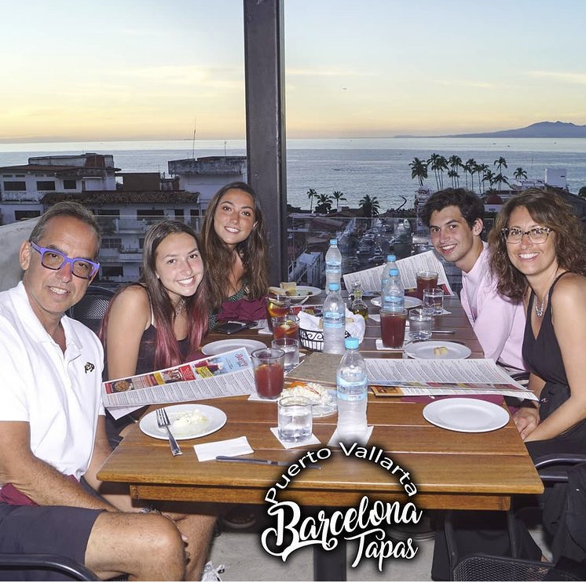

Welcome
My name is Gabriel Freedberg and currently I am a Junior at the Univeristy of Colorado, Boulder.
I am studying Computer Science with a minor in Computer Engineering, and possibly a minor in Business.
Currently, I am a Service Technician at Discount Tire, however, I plan on gaining real world knowledge with the skills I have learned in the classroom
through an internship. I plan on exploring the front end and back end sides of software engineering and possibly data engineering and analytics.

My family and I (2021)
About Me:
I was born in Denver, CO. Along with my parents, I have an older sister and a younger sister. I grew up very interested in almost everything that had to do with math and sciences.
In high school I excelled in the classroom, my favorite classes included Calculus, Physics, Computer Science, Differential Equations, and Chemisty. Outside of the classroom
I was an avid basketball player. I played for my high school, as well as playing for a club basketball team up until my senior year. I spend my free time hanging out with my friends, running, playing different
sports, and skiing. The beginning of my academic career at CU Boulder started as I pursued a degree in Mechanical Engineering, while I enjoyed the course work, I found myself more interested in my Computer Sceience course, CSCI 1300. After taking
another Computer Science course, CSCI 2270, I realized my interests were outside of Mechanical Engineering, and switched my major to Computer Science. After taking an in depth Computer Systems course, CSCI 2400, I added a Computer
Engineering Minor to my degree. This will give me the opportuinity to study software more in depth, so I can better understand the communication between the electrical and software components in general computing and how to optimize code. At CU Boulder I am an active member in greek life, at Chi Psi Alpha Psi Delta, a fraternity where I was the Academic Chairman during the 2021-2022 school year.
This position involved managing study hours for all brothers involved, based off of their GPA. I offered guidence and resources through academic hardship, such as tutors and study sessions.